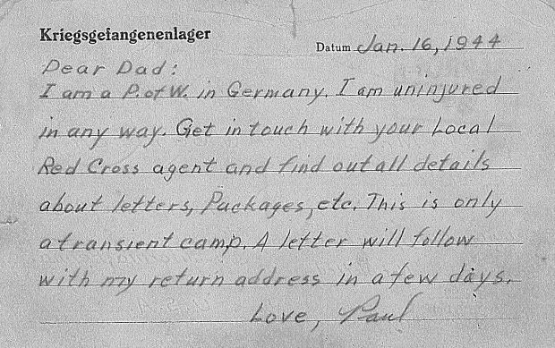

Architecture
Camps are built environments designed to organize and control large groups of people. Unlike prisons, which are typically permanent institutions, many camps emerge quickly in response to war, displacement, or political crisis. Their structures often reflect urgency and temporary planning, yet many remain in place for years or even decades.
The architecture of camps is rarely neutral. Layouts of barracks, fences, checkpoints, and watchtowers are designed to regulate movement and maintain separation between groups. Physical boundaries define where individuals can live, work, and gather, shaping daily life through spatial restrictions.
Primary Excerpts:




Across different historical contexts, camp architecture has served multiple purposes. Refugee camps, prisoner-of-war camps, and concentration camps have all used spatial design to manage populations and enforce authority. Roads, guard posts, and surveillance positions often determine how visibility and control are maintained within the environment.
These spaces reveal how architecture can function as a tool of governance. The arrangement of buildings, pathways, and boundaries does more than provide shelter. It organizes people, defines power relationships, and shapes how life unfolds within confined environments.
Systems of Sorting
Camps frequently rely on systems of classification to organize the people who live within them. These systems assign identities, categories, and status levels that determine where individuals are placed and how they are treated within the camp environment.
In some historical contexts, these classifications were formalized through visual markers. During the Second World War, for example, Nazi concentration camps used a system of colored badges and symbols to categorize prisoners according to political affiliation, religion, nationality, or other identities.
These forms of labeling functioned as tools of control. By reducing individuals to categories, institutions could more easily regulate labor, restrict movement, and separate groups from one another. The system transformed identity into a bureaucratic label that shaped everyday experiences inside the camp.
Systems of sorting reveal how camps operate not only through physical boundaries but also through administrative classification. Labels, documentation, and visual markers become mechanisms that define belonging, exclusion, and hierarchy within the confined space.
Temporal Regimes
Life inside camps is often structured around controlled forms of time. Daily routines, work schedules, curfews, and roll calls organize the rhythm of everyday life, creating an environment where personal time becomes subordinate to institutional regulation.
For many people held in camps, time can feel suspended between uncertainty and waiting. Displaced populations may remain in refugee camps for years while awaiting legal decisions or resettlement. Prisoners of war historically faced similar conditions, where daily routines continued while the end of confinement remained unknown.
These temporal structures shape how individuals experience confinement. Days become repetitive and predictable, yet the overall future remains uncertain. This combination of rigid routines and indefinite confinement produces an immense sense of psychological dislocation.
By controlling both space and time, camps become environments where institutional authority extends into the most ordinary aspects of life. Schedules, waiting periods, and prolonged confinement redefine how individuals experience the passage of time itself.
Fragmented Accounts
Much of what we know about life in camps comes from incomplete and fragmented accounts. Official records often focus on administration, population numbers, or logistics, leaving personal experiences largely undocumented.
Many testimonies instead survive through letters, diaries, photographs, and later recollections from those who lived through these environments. These materials provide insight into daily struggles, relationships, and moments of resilience that formal documentation rarely captures.
In some cases, visual records also reveal moments of humiliation or violence that were meant to reinforce power and control. Photographs documenting public punishments or forced displays of shame demonstrate how authority could be performed and recorded within camp systems.
These fragments form an alternative archive of camp life. While incomplete, they offer perspectives that challenge official narratives and preserve the voices of those whose experiences might otherwise remain absent from historical records.